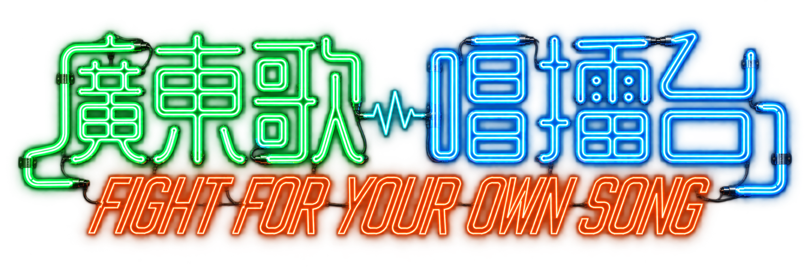
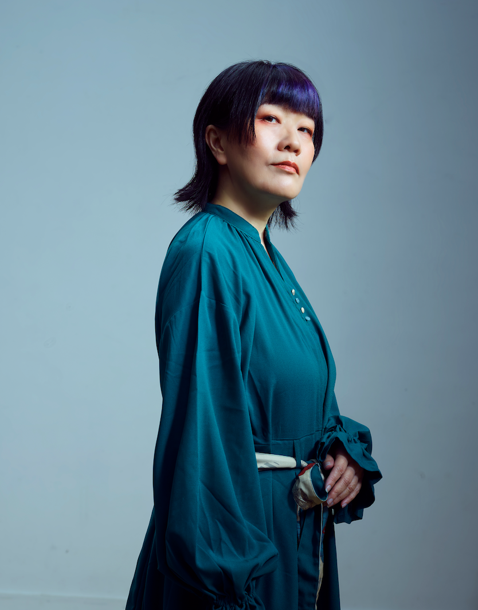
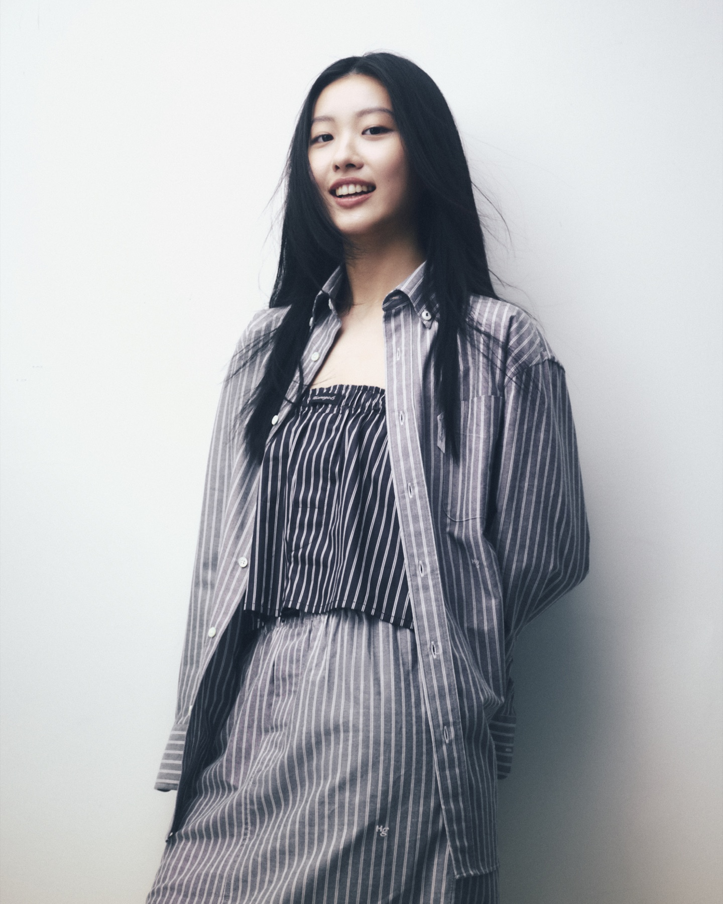
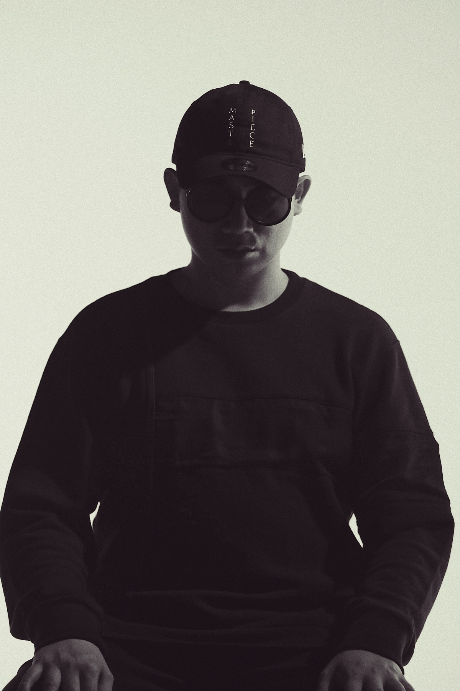
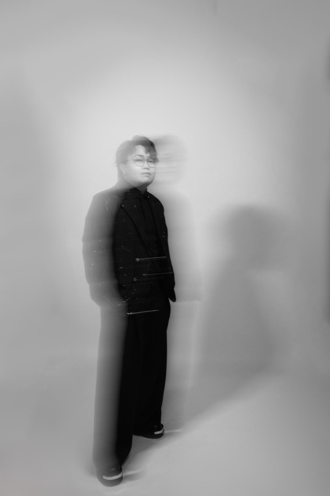
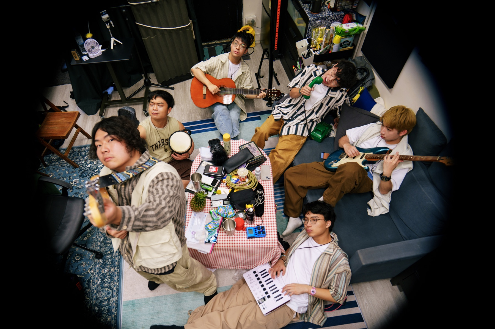

比賽形式
參賽者按大會安排的命題指引及20首指定歌曲，以20秒「TAG歌」及2分鐘演唱自行選段完成資格賽演出。

ROUND 02 · QUALIFYING ROUND01 · THE FORMAT
參賽者按大會安排的命題指引及20首指定歌曲，以20秒「TAG歌」及2分鐘演唱自行選段完成資格賽演出。
音樂感 × 故事性 × 歌手獨特性
評審將按評審準則作專業評審，選出晉級 GRAND FINAL 的參賽者。
JUDGING CRITERIA
必須呈現對原曲、原唱徹底的理解——分句、節奏性、咬字特色、聲區運用等等。
必須成功表達歌曲的故事或抽象概念。
必須以揀選的歌曲風格充分呈現個人獨特性及歌手可塑性。
02 · JUDGING PANEL

QUALIFYING JUDGE

QUALIFYING JUDGE

QUALIFYING JUDGE
03 · SEMI-FINAL SONG LIST
04 · PREPARE YOUR PERFORMANCE
晉級者先於 /confirm 完成出席確認表格及選取比賽和大師班時段。
參賽者根據大會發放的指定命題及歌曲資料自行選曲，並製作所需的2分鐘演唱 MP3。參賽者可自行轉調或剪輯伴奏，唯不能擅自添加背景音樂或和音。
按照所選擇的日期出席賽前歌唱大師班。
參賽者次序於7 NOV通知，請按時出席資格賽。
READY FOR ROUND 02?
立即確認你的備戰課及資格賽出席安排，並收取指定歌曲 MMO 資料。
立即確認出席・收取 MMO LIST →THE ROAD TO GRAND FINAL
從資格賽成功晉級的參賽者會直接進入總決賽，及獲事前安排PORTAL 總決賽場地實測及後台導覽。
GRAND FINAL JUDGING PANEL

GRAND FINAL
CLOSING CONCERT · 7:30PM
與 Constance 康堤、Mastamic、Yumiko 鄭希怡、Chiutung 釗彤、樂隊 RowdyRoadie 及上屆廣東歌唱擂台冠軍 Chris 同場演出。



